광학기사 (2022-04-24 기출문제)
1과목: 기하광학 및 광학기기
1. 종구면 광선수차의 크기와 광이 렌즈에 입사한 점의 광축에서 높이 h와의 관계로 옳은 것은?
- h2에 비례
- h에 비례
- h3에 비례
- h1/2에 비례
(정답률: 알수없음)

2. 굴절률이 1.5, 양면의 곡률반경이 10cm로 동일한 얇은 양볼록 렌즈의 굴절능(power)은?
- +1.5 D
- +10 D
- +15 D
- +30 D
(정답률: 알수없음)
3. 굴절률 1.5인 유리로 제작한 초승달 모양의 오목렌즈(negative meniscus)의 곡률반경 r1과 r2가 각각 50cm, 25cm 이고, 렌즈의 왼쪽은 공기, 오른쪽은 기름일 때 오목렌즈의 굴절능은 얼마인가? (단, 기름의 굴절률은 1.6 이며, 렌즈는 얇은 렌즈로 가정하여 계산한다.)
- -1.4 디옵터
- +1.4 디옵터
- -3.4 디옵터
- +3.4 디옵터
(정답률: 알수없음)
4. 간섭계를 사용하여 측정된 광학계의 파면오차와 간섭무늬가 다음과 같을 때, 가장 관련 있는 수차는?
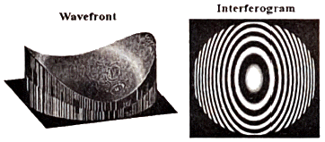
- 코마
- 구면수차
- 상면만곡
- 비점수차
(정답률: 알수없음)
5. 초점거리 10cm인 렌즈의 왼쪽 12cm인 거리에 물체가 놓여 있다. 초점거리 12.5cm인 두 번째 렌즈가 첫 번째 렌즈의 오른쪽 20cm 거리에 있을 때 상의 횡배율은 얼마인가?
- 1.09
- 1.19
- 1.29
- 1.39
(정답률: 알수없음)
6. 굴절능이 +6 디옵터인 크라운 렌즈의 색수차를 제거하기 위해서 플린트 렌즈와 결합시켰다. 이 플린트 렌즈의 굴절능은? (단, 크라운 렌즈의 아베수는 60이고, 플린트 유리의 아베수는 30 이다.)
- -1 디옵터
- -3 디옵터
- -6 디옵터
- -9 디옵터
(정답률: 알수없음)
7. 상측 NA가 0.5인 원형개구 무수차 광학계에서 파장 0.55μm 인 빛으로 결상할 때, Rayleigh 기준에 따른 공간분해능 한계는?
- 0.5 μm
- 0.55 μm
- 1.1 μm
- 0.67 μm
(정답률: 알수없음)
8. n = 1.5, v = 64, f = 10cm 일 때, 페츠발(Petzval) 곡률 반경은?
- -10cm
- -13cm
- -15cm
- -20cm
(정답률: 알수없음)
9. 두 점 A와 B가 12cm 떨어져 있을 때 두 점 사이를 굴절률이 1.5인 액체로 채운다면 B에 있는 관측자에게 A는 얼마나 떨어져 있는 것으로 보이는가?
- 8cm
- 10.5cm
- 12cm
- 18cm
(정답률: 알수없음)
10. 광선이 자오면(Meridional Plane)에 놓여 있을 때, 얇은 렌즈 앞면의 굴절능(k)을 구하는 식은? (단, 렌즈 재질의 굴절률은 n, 앞면의 곡률반경은 r1 이다.)
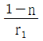
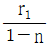
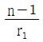
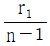
(정답률: 알수없음)
11. 출사동이 무한대에 있는 상측 텔레센트릭 광학계로 구성하고자 할 때, 조리개가 설치되어야 하는 위치는?
- 렌즈의 상측 초점
- 렌즈의 물체측 초점
- 횡배율이 +1이 되는 상점
- 횡배율이 +1이 되는 물체점
(정답률: 알수없음)
12. 직경 50mm, 초점거리 25cm인 렌즈가 평행으로 입사하는 빛에 대해 3mm의 종구면수차를 가지고 있다면 횡구면수차는?
- 0.2mm
- 0.3mm
- 0.4mm
- 0.5mm
(정답률: 알수없음)
13. 두 개의 렌즈로 이루어진 광학계에서 F1, F2는 초점이다. 0 의 위치에 그림과 같이 물체를 두면 어떻게 되는가?
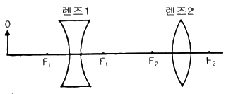
- 도립, 실상, 축소
- 도립, 허상, 축소
- 직립, 실상, 확대
- 직립, 허상, 확대
(정답률: 알수없음)
14. 곡률반경이 각각 r1 = -15cm, r2 = -5cm 인 구면으로 만들어진 렌지의 형태계수를 구하면 얼마인가?
- +2
- +3
- -2
- -3
(정답률: 알수없음)
15. 광선이 크라운 유리 표면에 50°의 입사각으로 입사한다. 이 때 굴절광의 각도 r은? (단, 크라운 유리의 굴절률은 1.5 이다.)
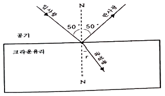
- 28.3°
- 30.7°
- 33.0°
- 35.0°
(정답률: 알수없음)
16. 굴절률이 1.5인 유리에서 굴절률이 1.3인 물로 빛이 진행할 때 전반사가 일어날 수 있는 임계각은?
- 30°
- 41°
- 45°
- 60°
(정답률: 알수없음)
17. 두 평면거울이 서로 45°의 각을 이루고 있다. 이들 사이에 한 물체가 놓여 있을 때 적당한 위치에서 볼 수 있는 상은 최대 몇 개인가? (단, 물체가 두 거울의 각의 이등분선상에 있을 필요는 없다.)
- 4
- 5
- 6
- 7
(정답률: 알수없음)
18. 3cm 크기의 물체가 곡률반경 20cm인 볼록거울 앞 20cm 지점에 있을 때, 상의 위치와 특성은?
- 거울 꼭지점 앞 6.67cm 지점, 정립 실상
- 거울 꼭지점 앞 6.67cm 지점, 정립 허상
- 거울 꼭지점 뒤 6.67cm 지점, 도립 실상
- 거울 꼭지점 뒤 6.67cm 지점, 정립 허상
(정답률: 알수없음)
19. 광축상(on-axis)에서만 생기는 수차는?
- 코마수차
- 비점수차
- 왜곡수차
- 구면수차
(정답률: 알수없음)
20. 정상적인 사람의 눈에 대한 설명으로 틀린 것은?
- 홍채는 조리개 역할을 한다.
- 물체가 가까워지면 시야각이 작아진다.
- 수정체가 곡률반경을 조절하여 초점을 맞춘다.
- 두 눈이 만드는 광각에 의해 원근을 알 수 있다.
(정답률: 알수없음)
2과목: 파동광학
21. 기판에 유전체 물질을 코팅하여 광대역 투과 필터를 만들려고 할 때, 박막의 구조로 옳은 것은? (단, H와 L은 파장의 1/4 두께를 갖는 고굴절 물질과 저굴절 물질을 나타낸다.)
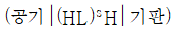
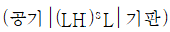
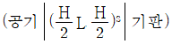
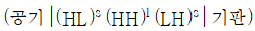
(정답률: 알수없음)
22. 그림과 같은 삼각형의 유리 프리즘에 백색광을 입사시킬 때, 프리즘을 통과한 후 색의 배열이 옳은 것은?
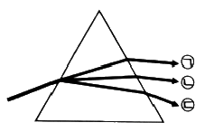
- ㉠ : 보라색, ㉡ : 녹색, ㉢ : 적색
- ㉠ : 녹색, ㉡ : 보라색, ㉢ : 적색
- ㉠ : 보라색, ㉡ : 적색, ㉢ : 녹색
- ㉠ : 적색, ㉡ : 녹색, ㉢ : 보라색
(정답률: 알수없음)
23. 파장 0.5μm의 광원으로부터 0.5m 떨어진 곳에 놓인 직경 0.5mm의 원형동공(circular aperture)이 광축에 수직으로 놓여 있다. 이 동공을 투과한 광의 강도가 최대인 곳은 동공으로부터 얼마 떨어진 광축상의 점인가?
- 1/6 m
- 1/3 m
- 1 m
- 2 m
(정답률: 알수없음)
24. 너비 a인 단일슬릿에 500nm 파장의 빛을 통과시켰다. 슬릿의 중심으로부터 θ = 30°에서 첫 번째 극소(어두운무늬)가 나타나기 위한 a값은 얼마인가?
- 0.25μm
- 0.58μm
- 1.00μm
- 2.00μm
(정답률: 알수없음)
25. 함수 f(x)의 푸리에 변환이 F(k)이다. f(x)를 평행 이동시킨 f(x-a)의 푸리에 변환식은? (단,
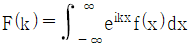
이다.)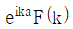
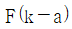
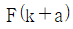
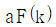
(정답률: 알수없음)
26. 두 개의 론치 격자(Ronchi grating)를 겹치면 무아레 무늬를 관찰할 수 있다. 이 무늬에 대한 설명으로 틀린 것은?
- 백색광에서도 무늬를 볼 수 있다.
- 격자면의 변형을 측정할 수 있다.
- 유리의 공간적 굴절률의 변화를 알 수 있다.
- 격자를 회전시키면 무늬 간격이 변화한다.
(정답률: 알수없음)
27. 굴절률이 3.5인 유전체 표면에 공기로부터 빛이 수직 입사하는 경우 표면에서 빛에 대한 반사도는 얼마인가?
- 0.04
- 0.08
- 0.31
- 0.56
(정답률: 알수없음)
28. 물체로부터 출발한 광파의 파면형태를 기준으로 홀로그램을 구분할 때 렌즈에 의해서 물체의 실상이 맺히는 위치에 건판을 두어 기록한 홀로그램은?
- Fresnel 홀로그램
- Image 홀로그램
- Fourier transform 홀로그램
- Lensless fourier transtorm 홀로그램
(정답률: 알수없음)
29. 세기가 I(x) = 5sin 5x + 20 으로 표현되는 일차원 공간상의 간섭무늬가 있다. 이 간섭무늬의 가시도(visibility)는 얼마인가?
- 1/8
- 1/4
- 1/2
- 1
(정답률: 알수없음)
30. 공기 중에서 굴절률 n인 유리판으로 입사각이 0도가 되게 빛이 입사할 때, 유리면에서의 반사도(reflectance)는?
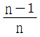
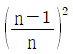
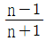
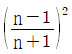
(정답률: 알수없음)
31. 파장이 0.514 μm인 Ar+ 레이저를 이용하여 홀로그래픽 회절격자를 만들려고 한다. 두 레이저광이 60°의 각도로 필름 면에 대칭 입사하는 경우 만들어진 격자의 홈 간격은?
- 2.97 × 10-7 m
- 5.14 × 10-7 m
- 2.97 × 10-6 m
- 5.14 × 10-6 m
(정답률: 알수없음)
32. 홀로그래피는 레이저가 발명된 후 급속히 발전되었다. 이는 레이저의 어떤 성질 때문에 기인하는 것인가?
- 직진성
- 결맞음
- 고휘도
- 집속성
(정답률: 알수없음)
33. 영(Young)의 이중 슬릿 실험을 물 속에서 수행하면, 공기 중에서 수행할 때와 비교하여 간섭 무늬 사이의 간격은 어떻게 변하는가?
- 좁아진다.
- 넓어진다.
- 변함없다.
- 좁아지는 부분과 넓어지는 부분이 모두 존재한다.
(정답률: 알수없음)
34. 파장 633nm의 헬륨-네온 레이저 광속을 간섭시켜서 홀로그래픽 평면 회절격자를 제작하려고 한다. 1mm당 1000개의 격자선(groove)을 갖는 격자를 얻으려면 두 간섭광파 사이의 각도를 얼마로 유지시켜야 하는가?
- 22°
- 37°
- 42°
- 57°
(정답률: 알수없음)
35. 굴절률 타원체 방정식이 0.3x2 + 0.3y2 + 0.4z2 = 1 로 표현되는 광학 매질에서 z축 방향으로 진행하는 광에 대한 굴절률은 얼마인가?
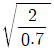
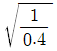
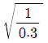
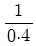
(정답률: 알수없음)
36. ND 필터(neutral density filter)의 광학밀도(optical density, OD)를 바르게 표현한 것은? (단, IO는 입사광의 세기, IT는 투과광의 세기이다.)
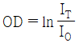
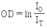
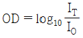
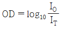
(정답률: 알수없음)
37. 반사율이 99%인 평면거울로 길이가 10cm 인 패브리-페롯(Fabry-Perot) 간섭계를 만든 경우, 중심파장이 500nm인 광에 대해서 얼마의 파장 차이를 분해할 수 있는가?
- 1.3nm
- 1.4nm
- 1.5nm
- 1.6nm
(정답률: 알수없음)
38. 굴절률 ni 인 매질에서 굴절률 nt(＜ ni)인 매질로 빛이 입사할 때 전반사가 일어나는 임계각 θc에 대한 표현 중 옳은 것은?
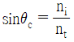
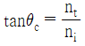
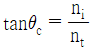
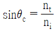
(정답률: 알수없음)
39. 다음 중 파면분할을 이용한 것은?
- 영(Young)의 이중 슬릿
- 마이켈슨(Michenlsom) 간섭계
- 마흐젠더(Mach-Zehnder) 간섭계
- 트와이만-그린(Twyman-Green) 간섭계
(정답률: 알수없음)
40. 그림과 같이 평면유리 위에 plano-convex lens를 올려놓고 위에서 λ의 파장을 갖는 광을 쬐여 줄 때, 형성되는 간섭무늬를 Newtons ring이라 한다. 간섭무늬의 첫 번째 어두운 부분까지의 반경이 1mm라면 사용된 광원의 파장은? (단, plano-convex lens의 곡률반경은 4m 이다.)
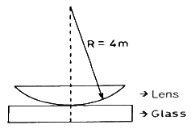
- 250nm
- 450nm
- 500nm
- 550nm
(정답률: 알수없음)
3과목: 광학계측과 광학평가
41. 레어지와 그 레이저에서 밀도 반전(population inversion)을 일으키는 방법의 연결이 틀린 것은?
- 루비 레이저 - 전류 주입
- 불화수소 레이저 – 화학 반응
- 티타늄 사파이어 레이저 - 광펌핑
- 아르곤 레이저 – 전자와 원자의 충돌
(정답률: 알수없음)
42. 다음 중 자동시준기(auto collimator)를 이용하여 측정할 수 없는 것은?
- 정반의 평면도
- 공작기계의 진직도
- 게이지블록의 거칠기
- 각도게이지 블록의 각도
(정답률: 알수없음)
43. 어떤 사람 눈의 도수가 59 디옵터일 때 눈의 초점거리는 약 얼마인가?
- 8mm
- 17mm
- 29mm
- 59mm
(정답률: 알수없음)
44. 방해석(calcite)을 통과하는 빛에 관한 다음 설명 중 옳은 것은?
- 방해석을 진행하는 빛은 편광상태에 관계없이 진행속도가 일정하다.
- 정상광선(ordinary ray)의 전기장의 진동방향은 광축과 나란하다.
- 방해석의 광축과 나란하게 진행하는 광선은 복굴절 현상을 보이지 않는다.
- 방해석의 복굴절 현상은 방해석의 이방성에 기인한 것으로 빛의 편광상태와는 무관하다.
(정답률: 알수없음)
45. nF = 1.58208, nd = 1.57250, nc = 1.56861 인 유리의 아베수(Abbe numbers)는 약 얼마인가?
- 42.2129
- 42.5019
- 43.2129
- 43.5214
(정답률: 알수없음)
46. 크기가 큰 대부분의 복사 광원의 방사 각도에 따른 복사휘도 세기 J에 관한 람베르트(Lambert) 법칙을 근사적으로 표현할 수 있다. 다음 중 람베르트(Lambert) 법칙으로 옳은 것은?
- Jθ = J0 sinθ
- Jθ = J0 cosθ
- Jθ = J0 sin2θ
- Jθ = J0 cos2θ
(정답률: 알수없음)
47. 다음 중 광선의 방향을 바꾸기 위하여 만들어진 프리즘이 아닌 것은?
- 포로(Porro) 프리즘
- 펜타(Penta) 프리즘
- 월라스톤(Wollaston) 프리즘
- 코너큐브(Corner-cube) 프리즘
(정답률: 알수없음)
48. 초점거리가 10cm, 굴절률이 1.6, V수가 64인 단일렌즈에 대한 Petzval 조건이 만족될 곡률반경 R은?
- 8cm
- 16cm
- 24cm
- 32cm
(정답률: 알수없음)
49. 박막의 두께를 측정하기 위해 토란스키 간섭계를 사용하여 그림과 같은 간섭무늬를 얻었다. 박막의 두께 t를 바르게 나타낸 것은? (단, λ는 빛의 파장이다.)
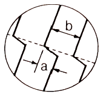
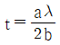
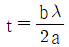
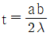
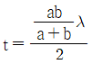
(정답률: 알수없음)
50. 광학 유리의 제조공정 중 ( ) 안에 들어갈 내용으로 알맞은 것은?
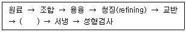
- 냉각형 주입
- 결정화
- 여과
- 연마
(정답률: 알수없음)
51. 다음 중 결정의 비선형성(non-linearity)과 관련이 있는 현상은?
- 복굴절(birefringence)
- 광활성도(optical activity)
- 패러데이 회전(Faraday rotation)
- 2차 조화파 발생(second hamonic generation)
(정답률: 알수없음)
52. 눈의 조절작용을 통하여 초점거리가 25cm인 확대경으로 물체를 본다면 몇 배의 각배율로 물체가 보이는가?
- 1배
- 2배
- 3배
- 4배
(정답률: 알수없음)
53. 다음 중 구면계(spherometer)를 이용하여 측정할 수 있는 것은?
- 조명도 측정
- 프리즘의 굴절률 측정
- 구면체의 곡률반경 측정
- 시료의 파장별 투과율 측정
(정답률: 알수없음)
54. 복사계측학(Radiometry)에서 에너지 전달율인 파워(Power)의 기본 단위인 와트(Watt)에 대응하는 측광학(Photometry)의 단위는?
- 럭스(lux)
- 줄(Joule)
- 루멘(lumen)
- 람베르트(lambert)
(정답률: 알수없음)
55. 평행광선이 수정체를 통과한 후 망막 앞에 상이 생겨 망막에서의 초점이 흐려지는 눈의 굴절이상의 명칭과 교정방법이 옳은 것은?
- 근시, 볼록렌즈를 이용하여 교정
- 근시, 오목렌즈를 이용하여 교정
- 원시, 볼록렌즈를 이용하여 교정
- 원시, 오목렌즈를 이용하여 교정
(정답률: 알수없음)
56. 완전히 비평광된(unpolarized) 빛이 굴절률 1.5인 유리에 브루스터 각(Brewster’s angle)으로 입사하였을 때의 설명으로 옳지 않은 것은?
- 입사각과 굴절각의 합은 90° 이다.
- 입사각은 약 56° 이다.
- 반사된 빛은 입사평면에 수직인 방향으로 완전히 편광되어 있다.
- 굴절된 빛은 완전히 비편광되어 있다.
(정답률: 알수없음)
57. 분광 광도계(Spectrophotometer)에 관한 설명으로 옳지 않은 것은?
- 유체나 고체의 굴절률을 측정한다.
- 분광 광도계는 반드시 적분구를 사용해야 한다.
- 박막형태 시편의 반사율을 측정한다.
- 박막형태 시료의 굴절률 및 소광계수의 스펙트럼을 측정한다.
(정답률: 알수없음)
58. 광축에 평행하게 입사한 상면 조도에 대해, 광축과 θ의 각도를 이루며 입사하는 빛에 의한 상면 조도의 비율로 옳은 것은?
- cosθ
- cos2θ
- cos3θ
- cos4θ
(정답률: 알수없음)
59. 다음 중 가시광선 영역에 속하는 것은?
- 2.34×1014 Hz
- 360 Å
- 500 μm
- 630 nm
(정답률: 알수없음)
60. 60° 프리즘을 이용한 프리즘 분광기의 분해능을 높이기 위해서는 어떤 프리즘을 사용해야 하는가?
- 분산이 크고 밑변의 길이가 긴 프리즘
- 분산이 크고 밑변의 길이가 짧은 프리즘
- 분산이 작고 밑변의 길이가 긴 프리즘
- 분산이 작고 밑변의 길이가 짧 프리즘
(정답률: 알수없음)
4과목: 레이저 및 광전자
61. 파장 500nm의 laser에서 측정된 beam waist 의 반지름 w가 31.83μm 발산각 θ가 10 mrad 일 때, 이 레이저의 M2-factor는 약 얼마인가?
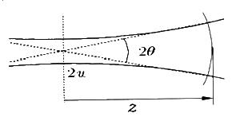
- 1
- 2
- 10
- 20
(정답률: 알수없음)
62. CO2 레이저가 높은 효율로 발진할 수 있는 주원인으로 틀린 것은?
- 레이저 준위가 거의 바닥상태에 있어 원자 양자효율이 높기 때문이다.
- 전자충돌로 여기된 CO2 분자는 점점 낮은 여기 상태로 천이되어 대부분이 장수명 준위 (001)에 모이는 경향이 있기 때문이다.
- 방전에 의해 여기된 N2 분자의 대부분이 CO2 분자의 장수명 준위와 공명할 수 있는 제1여기상태에 모이는 경향이 있기 때문이다.
- CO2 분자는 3개의 원자로 구성되어 있으며, 원자들이 내부진동을 하는 진동모드가 1개 밖에 없기 때문이다.
(정답률: 알수없음)
63. 결정구조를 지닌 재료 중 광학적으로 단축(uniaxial) 성질을 보여주는 것은?
- Cubic 구조
- Hexagonal 구조
- Monoclinic 구조
- Orthorhombic 구조
(정답률: 알수없음)
64. 레이저 공진기(resonator)의 두 거울의 반사율이 각각 99%이고 길이가 0.5m 일 때 단일 모드로 공진 시 선폭은 약 몇 kHz 인가?
- 95 kHz
- 190 kHz
- 380 kHz
- 950 0
(정답률: 알수없음)
65. 광전효과에 대한 설명 중 틀린 것은?
- 전자파의 양자화 된 입자성에 의해 설명이 가능하며 파동성으로는 설명할 수 없다.
- 어떤 주파수 이상의 전자파를 금속에 조사시키면 그 표면에서 전자가 방출되는 현상이다.
- 외부에서 전압을 가하면, 그 전압은 전자의 최대 운동 에너지에 추가되므로 억제전위의 증가에 따라 방출되는 전자의 운동에너지는 증가된다.
- 광전효과에 대한 금속의 임계 전압은 전자파의 강도에 무관하므로 매우 약한 강도의 광선에서도 광전 효과를 관찰할 수 있다.
(정답률: 알수없음)
66. 다음 사진과 같은 에너지 공간 분포를 가지는 레이저의 공간 모드는?
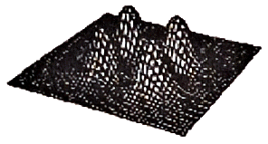
- TEM22
- TEM11
- TEM40
- TEM21
(정답률: 알수없음)
67. 전기광학(Electro-optic) Q-스위치에 쓰이는 재료가 아닌 것은?
- Benzene
- Fused Silica
- Nitrotoluene
- Nitrobenzene
(정답률: 알수없음)
68. CO2 레이저(λ = 10.6 μm)에서 나온 광속허리의 직경이 5mm 폭일 때 작은 점 0.1mm의 직경으로 광속의 초점을 맺고 싶으면, 이때 필요한 렌즈의 초점거리는 얼마인가?
- 15 mm
- 28 mm
- 33 mm
- 74 mm
(정답률: 알수없음)
69. 광섬유 통신에서 레이저 광원의 빛을 광섬유 속으로 많이 입사시키기 위해서는 발산 각이 크지 않은 거이 좋다. 빔 허리반경(radiusof beam waist)이 25μm이고 파장이 633nm인 헬륨-네온 레이저를 사용할 경우 가우스 광속의 발산 각을 구하면 얼마인가?
- 0.08 rad
- 0.016 rad
- 0.8 rad
- 0.16 rad
(정답률: 알수없음)
70. 반도체 레이저의 복사는 두 가지 유형의 물질 사이의 좁은 접합점에서 일어난다. 만일 파장이 780nm이고 접합점의 폭 즉, 슬릿의 폭이 5μm 라면 광속의 총발산각(full angle divergence)은 얼마인가?
- 11.4°
- 12.8°
- 14.3°
- 15.2°
(정답률: 알수없음)
71. 매질의 굴절률이 가해지는 외부 전기장에 비례(∝ E)하여 변하는 현상은?
- 커(kerr) 효과
- 포켈스(Pockels) 효과
- 광전(photoelectric) 효과
- 광굴절(photorefractive) 효과
(정답률: 알수없음)
72. 레이저를 광원으로 사용하여 홀로그램을 제작할 수 있다. 제작된 홀로그램 필름에 레어지를 비추어 상을 재생할 수 있는데, 이러한 재생과정은 빛의 어떤 성질을 이용한 것인가?
- 굴절
- 반사
- 회절
- 산란
(정답률: 알수없음)
73. 레이저 빛의 파장영역(Spectrum)을 분석하기 위한 광학소자로써 틀린 것은?
- 프리즘
- KDP결정
- 회절격자
- 스펙트럼 메타
(정답률: 알수없음)
74. 레이저는 광섬유 통신에 광범위하게 사용된다. 광섬유 내에서 레어저 빛은 어떤 특성에 의하여 전달되는가?
- 회절
- 간섭
- 편광
- 전반사
(정답률: 알수없음)
75. 다음 중 소재와 그 소재의 사용되는 결정으로 틀린 것은?
- 포켈스 셀 : KDP 결정
- 광 파라메트릭 발진(OPO) : BBO 결정
- 제2고조파 발생(SHG) : LiNbO3 결정
- 파라데이 아이솔레이터(Faraday isolator) : KTP 결정
(정답률: 알수없음)
76. LED 변조와 비교했을 때, LD 변조의 설명으로 틀린 것은?
- 임계전류는 온도 의존성이 있다.
- 방출 파장은 온도 의존성이 없다.
- 임계 전류는 수명에 의한 의존성이 있다.
- 레이저 다이오드 변조시에는 임계 전류가 있다.
(정답률: 알수없음)
77. 가간섭성 길이(coherence length)가 30cm인 He-Ne 레이저광의 가간섭성 시간(coherence time)은?
- 10-9 sec
- 2 × 10-9 sec
- 5 × 10-9 sec
- 5 × 10-9 min
(정답률: 알수없음)
78. 주파수가 안정하고 가간섭거리(coherence length)가 길어 간섭계 등 정밀 계측에 많이 사용되는 레이저는?
- N2 레이저
- CO2 레이저
- ArF 레이저
- He-Ne 레이저
(정답률: 알수없음)
79. 어떤 결정체의 유전율을 아래의 행렬과 같이 표현할 수 있을 때, 이 결정체의 종류는? (단, n0는 정상굴절률, ne는 비정상굴절률이다.)
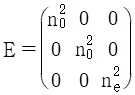
- 단축결정
- 쌍축결정
- 삼축결정
- 등방성결정
(정답률: 알수없음)
80. 커셀(Kerr cell)에 전기장 E를 걸어 주어 인위적으로 편광방향을 변화시키려 할 때, 전기장과 평행인 편광성분과 이에 수직인 편광성분 사이의 위상차이 P를 나타낸 것은? (단, L은 Kerr cell의 두께이고, K는 커 상수(Kerr constant) 이다.)
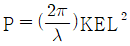
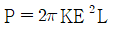
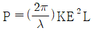
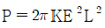
(정답률: 알수없음)
광선수차는 광이 렌즈를 통과할 때 굴절되는 정도에 따라 결정되는데, 이 굴절은 렌즈의 곡률과 빛의 파장에 따라 달라진다. 따라서 광선수차의 크기는 렌즈의 형태와 빛의 특성에 따라 달라지며, 광축에서 떨어진 높이 h와는 직접적인 관련이 없다. 따라서 h와 광선수차의 크기는 비례하지 않는다.